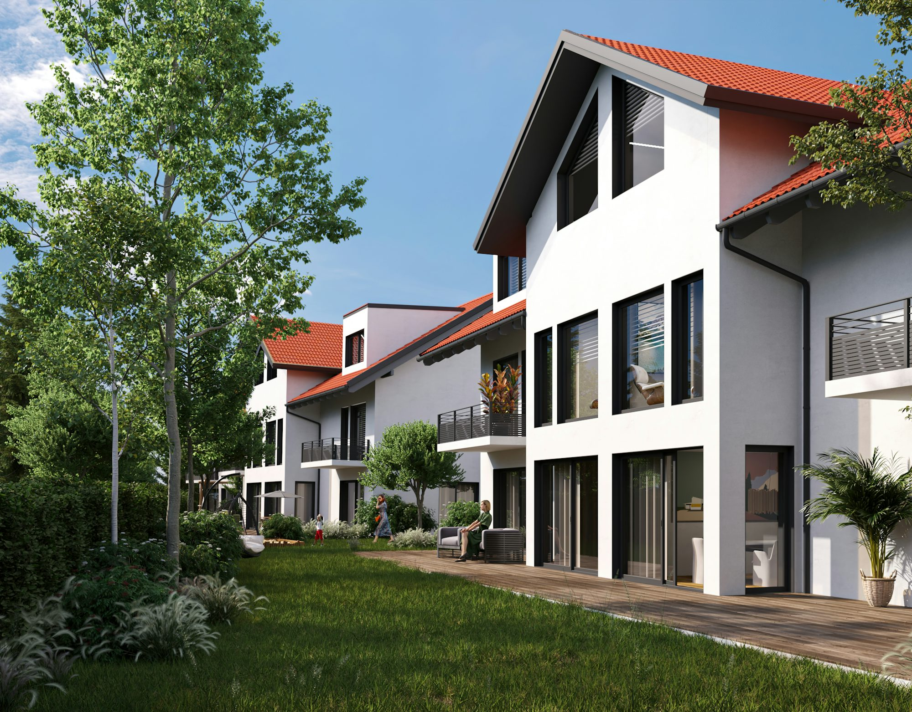

The Timeless Mediterranean Villa
The Mediterranean villa is perhaps one of the most recognizable styles, characterized by its warm colors, stucco exteriors, and red-tiled roofs. This architectural style is inspired by the coastal regions of Southern Europe and emphasizes a seamless integration with the outdoor environment. The use of arched windows and wrought-iron balconies adds to the charm, creating inviting spaces that are perfect for relaxation and social gatherings.
Outdoor living is central to Mediterranean villas. Spacious courtyards and gardens often include fountains, pergolas, and plenty of seating areas, allowing residents to enjoy the sun and fresh air. These villas typically feature high ceilings and open floor plans, enhancing the sense of space and light within. The interior decor often incorporates vibrant colors, terracotta tiles, and rustic wooden furniture, which together create a warm and inviting atmosphere. This style appeals to those who cherish a lifestyle centered around family and community.
Embracing Rustic Elegance in Tuscan Villas
Tuscan villas embody the essence of Italy’s charming countryside, showcasing stone facades, terracotta roofs, and wrought-iron accents. This architectural style reflects a rustic elegance that is both inviting and sophisticated. Inside, exposed wooden beams, large fireplaces, and artisanal finishes contribute to a cozy yet luxurious atmosphere.
The layout of Tuscan villas is often designed to foster family connections, with expansive kitchens and dining areas that serve as the heart of the home. Outdoor spaces frequently feature olive groves or vineyards, providing a picturesque backdrop for leisurely afternoons and gatherings. This style resonates with those who value tradition and a slower pace of life, making it an ideal retreat for families and friends.
Serenity in Balinese Villas
Balinese villas offer a unique architectural experience, emphasizing harmony with nature. Featuring open-air designs, thatched roofs, and lush gardens, these homes create serene environments that promote relaxation and well-being. The use of natural materials such as bamboo and stone enhances the connection to the surrounding landscape, making Balinese villas perfect for those seeking a tranquil escape.
The seamless integration of indoor and outdoor spaces is a hallmark of Balinese architecture. Expansive patios and serene water features invite residents to unwind and connect with nature. The interiors often showcase handcrafted furnishings and vibrant textiles that reflect the local culture. This architectural style appeals to individuals who appreciate mindfulness and a deep connection to their surroundings, offering a sanctuary for rejuvenation.
Modern Villas: A Fusion of Luxury and Minimalism
Modern villas represent a contemporary approach to design, characterized by sleek lines, open floor plans, and expansive glass walls. This style emphasizes minimalist aesthetics, creating spaces that feel both luxurious and functional. Many modern villas incorporate sustainable materials and smart technology, catering to environmentally conscious homeowners.
The fluidity of indoor and outdoor living spaces is a defining feature of modern villas. Beautifully landscaped gardens, infinity pools, and spacious terraces create inviting environments for entertaining and relaxation. This architectural style attracts individuals who appreciate contemporary design and luxury living, providing a sophisticated backdrop for social gatherings and personal enjoyment.
Colonial Villas: Graceful and Timeless
Colonial villas draw inspiration from historical architecture, featuring grand facades, symmetrical designs, and spacious verandas. These homes showcase intricate details and classic elements, creating an air of elegance that resonates with many. Inside, high ceilings and large windows allow for natural light to flood the living spaces, enhancing the sense of grandeur.
The layout of colonial villas is often designed for entertaining, with large dining rooms and beautifully appointed living areas that can accommodate gatherings of all sizes. Surrounding gardens enhance the stately presence of these homes, offering picturesque outdoor spaces for social interactions. This style appeals to families seeking a refined living experience, combining sophistication with comfort.
Caribbean Villas: A Splash of Color and Culture
Caribbean villas are a vibrant celebration of island life, characterized by bright exteriors, open layouts, and lush landscaping. These homes are designed to embrace the tropical climate, featuring expansive outdoor living spaces that encourage relaxation and enjoyment of the beautiful surroundings. The use of local materials and colorful decor captures the essence of Caribbean culture, creating lively and inviting environments.
Interiors often showcase traditional craftsmanship, with handmade furnishings and vibrant artwork that reflect the local culture. Large windows and sliding doors create a seamless transition between indoor and outdoor spaces, enhancing the overall experience of island living. This style attracts those seeking a lively atmosphere, making Caribbean villas ideal for vacation homes or permanent residences that embody a relaxed, carefree lifestyle.
Cottage Villas: Cozy Charm with a Touch of Luxury
Cottage villas combine the cozy charm of traditional cottages with the spaciousness and luxury of larger homes. These delightful retreats often feature inviting interiors adorned with rustic details, such as exposed beams and vintage furnishings, fostering a sense of comfort and tranquility. The design encourages a relaxed ambiance, perfect for intimate gatherings or peaceful escapes.
Outdoor spaces typically include charming gardens and cozy patios, ideal for enjoying leisurely afternoons or evenings under the stars. This style attracts those who value simplicity and a strong connection to nature, offering a peaceful retreat from the hustle and bustle of everyday life. Cottage villas embody the essence of cozy living, inviting residents to savor the charm and beauty of their surroundings.
French Chateau: The Pinnacle of Opulence
French chateaus are synonymous with opulence and elegance, showcasing intricate detailing and classic architectural styles. With symmetrical designs, ornate facades, and formal gardens, these homes exude luxury and sophistication. Interiors often feature high ceilings, expansive salons, and exquisite decor that creates an atmosphere of grandeur and refinement.
Chateaus are designed for entertaining, with large dining rooms and beautifully appointed spaces that accommodate gatherings of all sizes. This style appeals to those who appreciate historical architecture and a lavish lifestyle, making French chateaus a desirable choice for affluent buyers seeking a distinctive residence.
Spanish Hacienda: A Rich Cultural Tapestry
Spanish haciendas reflect the rich cultural heritage of Spain, characterized by tiled roofs, arched doorways, and picturesque courtyards. The design emphasizes a strong connection to the outdoors, with lush gardens and inviting terraces that encourage relaxation and enjoyment of the beautiful surroundings. The use of vibrant colors and intricate tile work celebrates Spanish craftsmanship, enhancing the home's character.
This style attracts those who appreciate warmth and character, making Spanish haciendas perfect for family living and entertaining. The inviting atmosphere fosters a sense of community and connection, creating spaces where lasting memories can be made.
Rustic Villas: Nature's Embrace
Rustic villas celebrate the beauty of natural materials, showcasing wood and stone to create warm, inviting environments. The design often includes large windows that frame views of the surrounding landscape, allowing nature to become an integral part of the home. Interiors typically feature cozy furnishings, large fireplaces, and artisanal details that evoke a sense of comfort and homeliness.
This style appeals to those who value simplicity and a strong connection to their surroundings, making rustic villas ideal for tranquil escapes. The emphasis on natural elements creates a warm atmosphere that invites relaxation and reflection, fostering a deeper appreciation for the beauty of the natural world.
Mountain/Ski Chalet Villas: A Cozy Retreat in Nature
Mountain or ski chalet villas are designed for comfortable living in mountainous regions. Characterized by timber detailing, stone accents, and panoramic views, these homes provide a warm and inviting atmosphere for outdoor enthusiasts. The design often includes large windows and open spaces, allowing residents to soak in the breathtaking scenery while enjoying the comforts of home.
Interiors typically feature plush furnishings, large fireplaces, and spacious living areas, perfect for gathering after a day of outdoor adventures. This style appeals to those who appreciate the beauty of nature and the charm of mountain living, making ski chalet villas a popular choice for winter retreats.
Conclusion
The diverse styles of villas offer a rich tapestry of architectural beauty, each reflecting the cultural heritage and lifestyle of its region. From the sun-soaked elegance of Mediterranean villas to the serene tranquility of Balinese homes, these designs invite residents to embrace a lifestyle of comfort and luxury. As the estate industry continues to evolve, these timeless villa styles remain a cherished choice for those seeking beauty, tranquility, and a connection to their surroundings. Whether as a primary residence or a vacation escape, villas embody the ultimate expression of refined living.